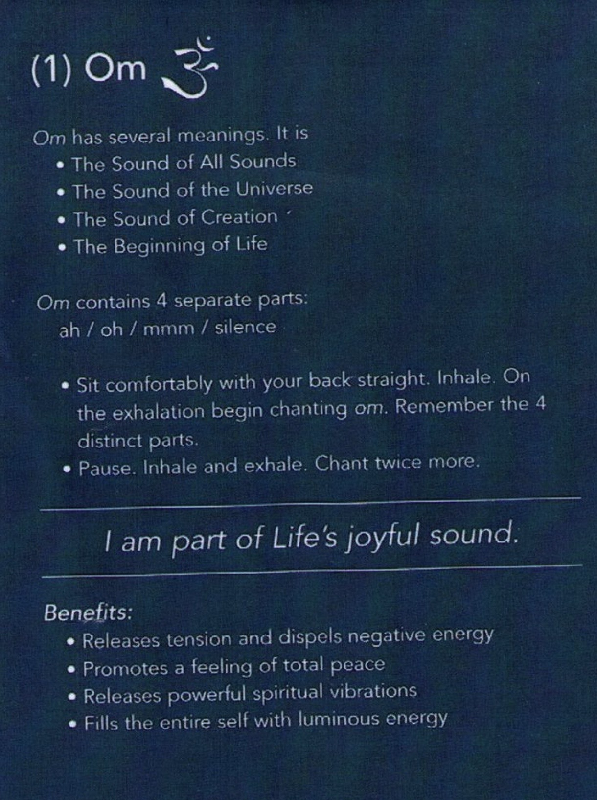
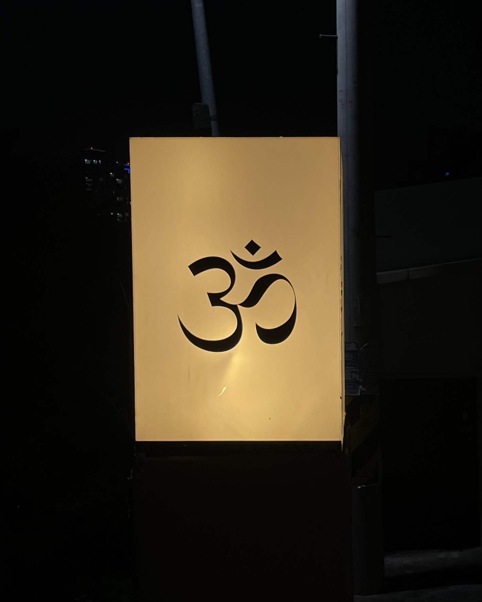
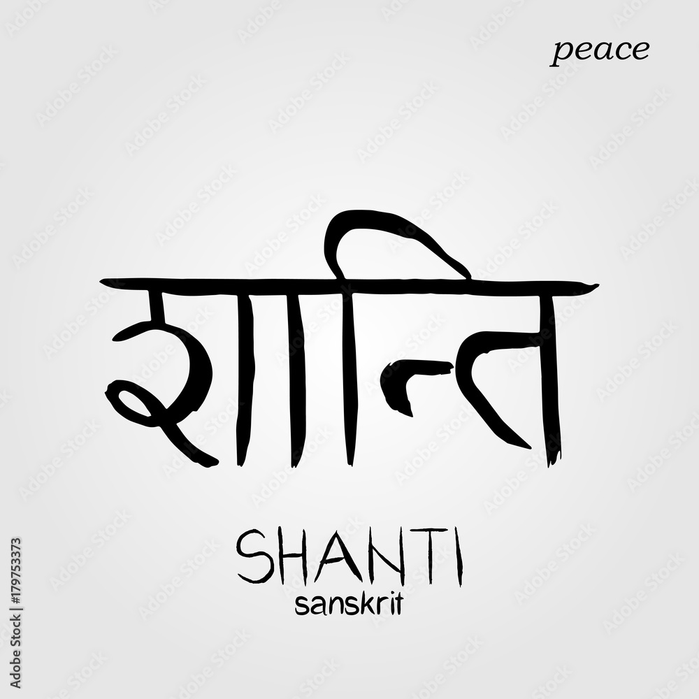
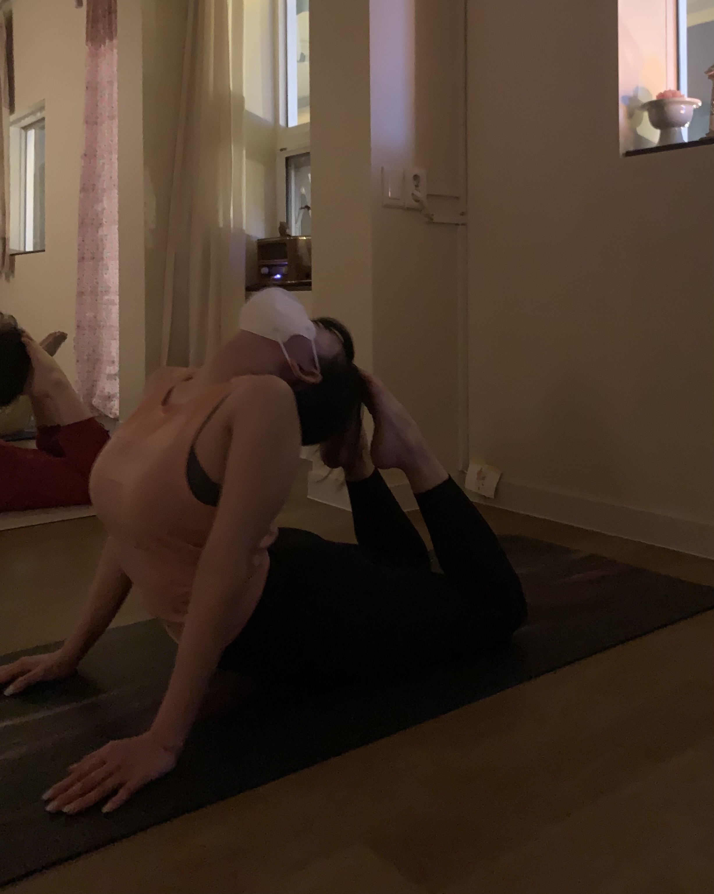

Hi, This is a space for you getting to know about yoga mores.
Om or aum (pronounced ah-uu-mm) is a sacred sound considered by many ancient philosophical texts to be the sound of the universe, encompassing all other sounds within it. In Sanskrit, om is called Pranava, which means to hum, and is considered an unlimited or eternal sound. Although the term is linked to Indian culture, Buddhism, Hinduism, and Jainism, om chanting is a spiritual practice that transcends culture and religion and is inclusive of all possible definitions and interpretations of God, or Brahma. (source)
Inner peace, a state of being mentally and spiritually at peace, with enough knowledge and understanding to keep oneself strong in the face of discord or stress. Kshanti, one of the paramitas of Buddhism. Shanti Mantras or "Peace Mantras”, Hindu prayers or sacred utterances believed by practitioners to have religious, magical or spiritual powers.(source)
hard
healthy